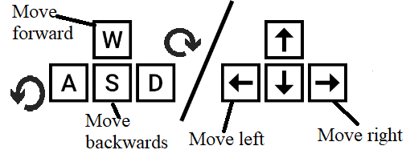

Hi,
My name is Mohammad Ali Kassem aka MAK, and I tried to make this CV as intresting as possible. So I hope You'll enjoy it.
Requirements
For the best experience, and to use the game version of the CV (The proper version), make sure that you are working with a reliable Computer with respectable specs and a stable internet connection.
Resources
This website uses the Three JS Library
The drone design is not mine, it belong to Reikan
This code was inspired from SimonDev
This code was inspired from DolphinIQ
Controls

Or press R To reset.